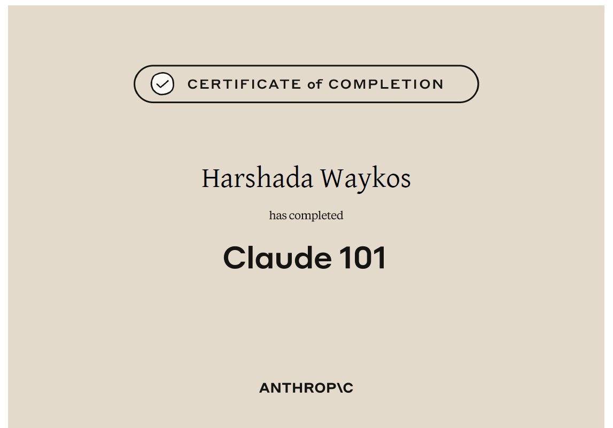
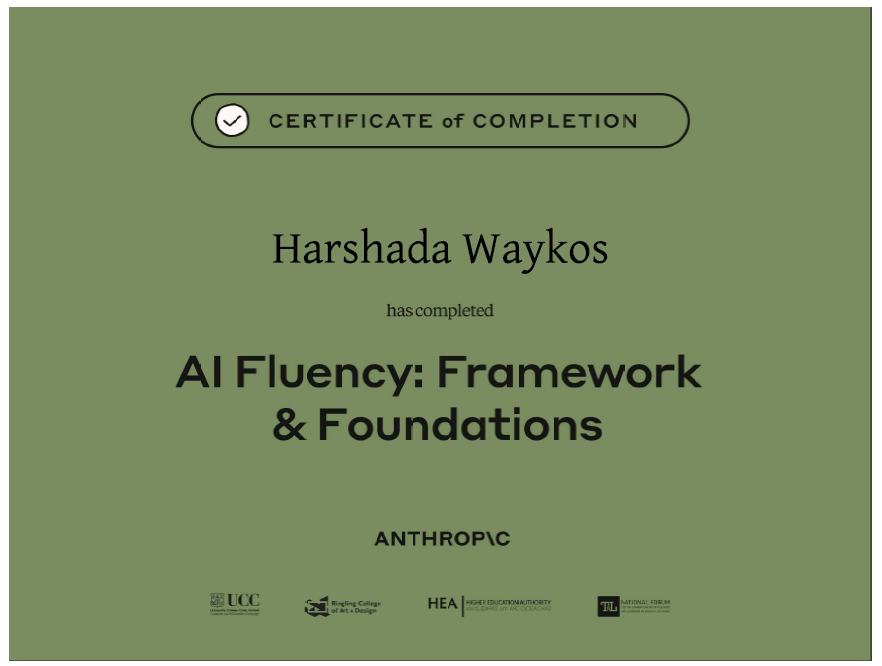
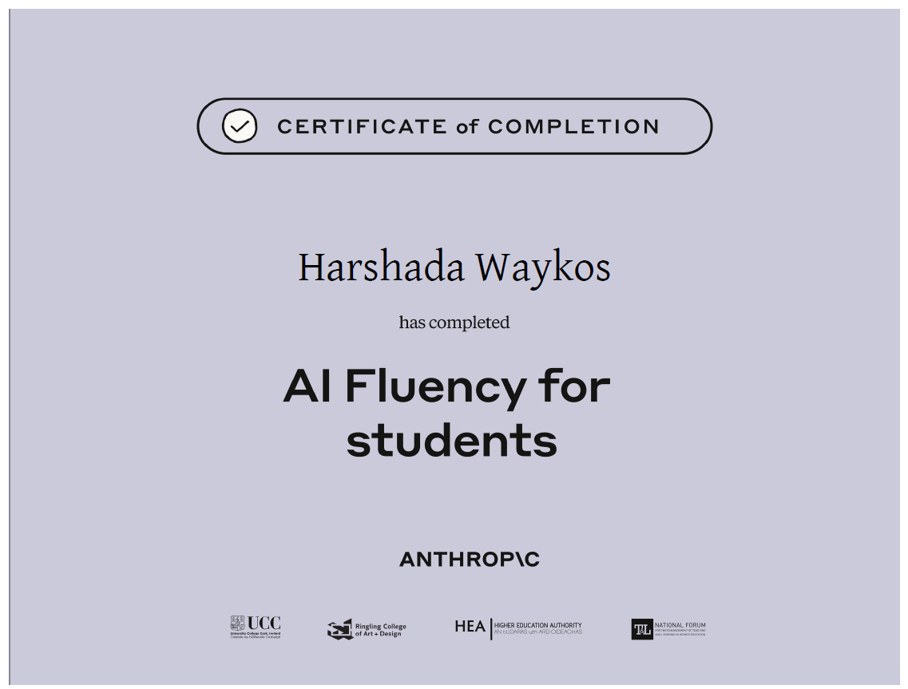
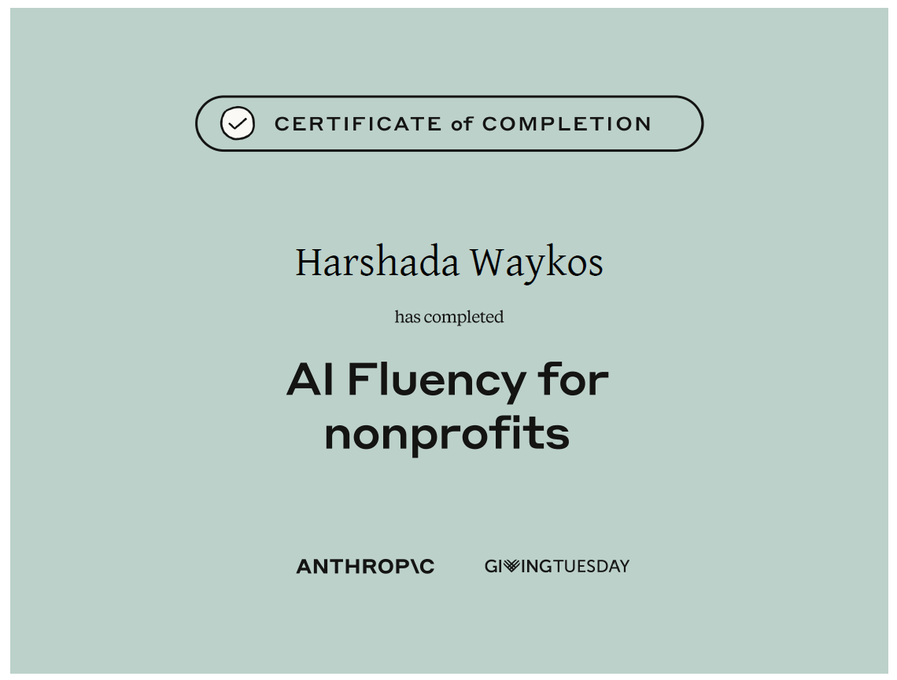

Completed an introductory course on AI fundamentals, learning how to effectively use Claude for everyday tasks and productivity.

Completed a foundational course on working with AI using structured frameworks for effective, ethical, and thoughtful decision-making.

Completed a course on using AI responsibly for academics, enhancing learning, research, and critical thinking skills.

Completed a course focused on applying AI for social impact, using ethical practices and structured frameworks to improve nonprofit work